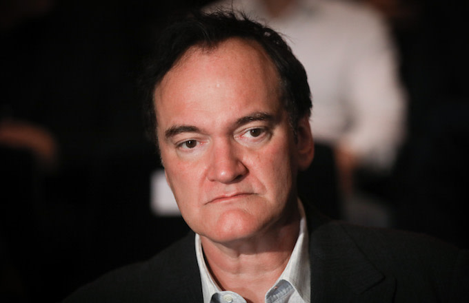

Quentin Tarantino's movies

Quentin Tarantino is an American director, producer, screenwriter and actor, who has directed and written ten films. He first began his career in the late 1980s by directing, writing and starring in the black-and-white My Best Friend's Birthday, a partially lost amateur short film which was never officially released. He impersonated musician Elvis Presley in a small role in the sitcom The Golden Girls (1988), and briefly appeared in Eddie Presley (1992). As an independent filmmaker, he directed, wrote and appeared in the crime thriller Reservoir Dogs (1992), which tells the story of five strangers brought together for a jewelry heist. It proved to be Tarantino's breakthrough film and was named the "Greatest Independent Film of all Time" by Empire. His screenplay for Tony Scott's True Romance (1993) was nominated for a Saturn Award.
In 1994, Tarantino wrote and directed the neo-noir black comedy Pulp Fiction, a major critical and commercial success. Cited in the media as a defining film of the modern Hollywood, the film earned Tarantino an Academy Award for Best Original Screenplay and a Best Director nomination. Also in 1994, he served as an executive producer for Killing Zoe and wrote two other films. The following year, Tarantino directed The Man from Hollywood, one of the four segments of the anthology film Four Rooms, and an episode of ER, entitled "The Motherhood". He wrote Robert Rodriguez's From Dusk till Dawn (1996)—one of the many collaborations between them—which attained cult status and spawned several sequels, in which they served as executive producers. His next directorial ventures Jackie Brown (1997) and Kill Bill (2003–04) were met with critical acclaim. The latter, a two-part martial arts film (Volume 1 and Volume 2), follows a former assassin, seeking revenge on her ex-colleagues who attempted to kill her.
Tarantino's direction of "Grave Danger", a CSI: Crime Scene Investigation episode, garnered him a Primetime Emmy Award for Outstanding Directing for a Drama Series nomination. He directed a scene in Frank Miller and Rodriguez's Sin City (2005). Tarantino and Rodriguez later collaborated in the double feature Grindhouse (2007); he directed the segment Death Proof. He next penned and directed the war film Inglourious Basterds (2009), a fictionalized account of the Nazi occupation of France during World War II. The critically and commercially successful film earned Tarantino two nominations at the 82nd Academy Awards—Best Director and Best Original Screenplay. His greatest commercial success came with the 2012 western film Django Unchained, earning $425.4 million worldwide; it also won him another Academy Award for Best Original Screenplay. He then wrote and directed another commercially successful western film The Hateful Eight (2015), whose screenplay was nominated for a BAFTA Award and a Golden Globe Award.